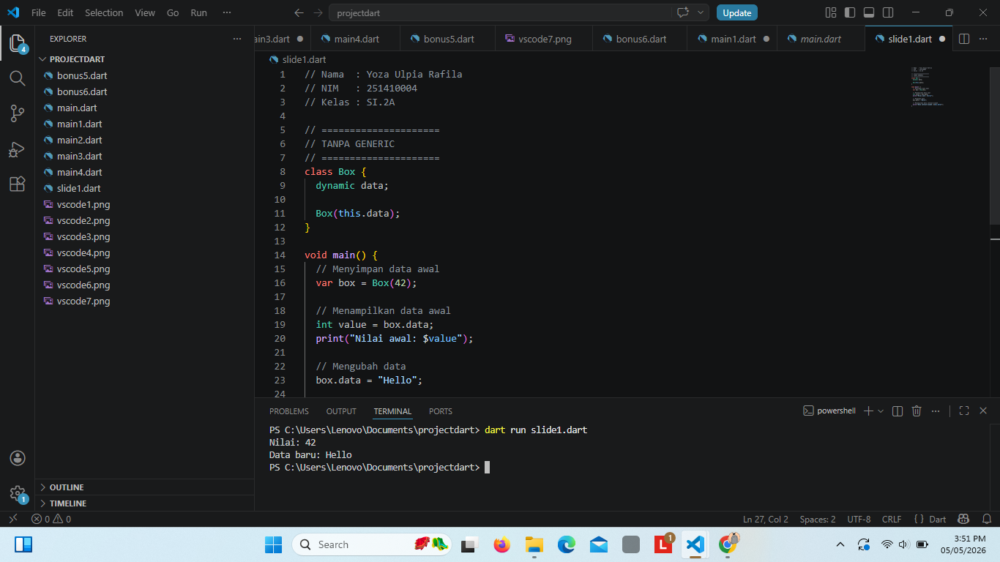
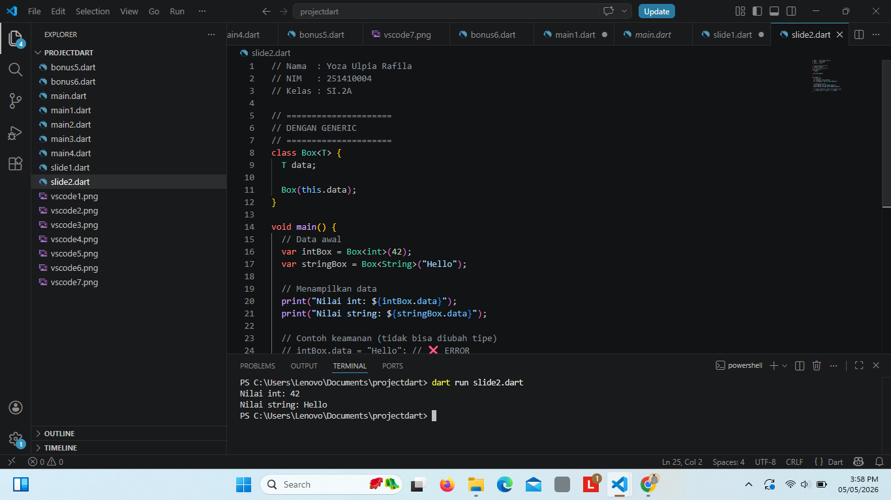
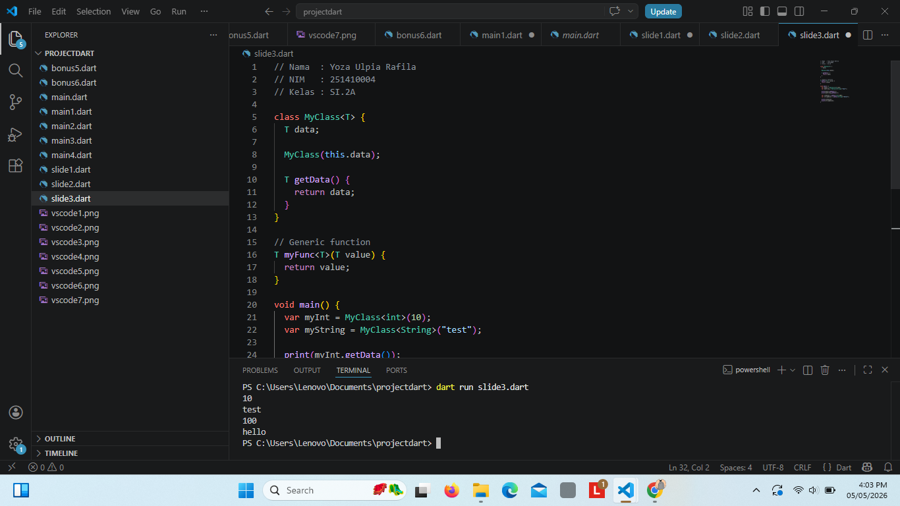
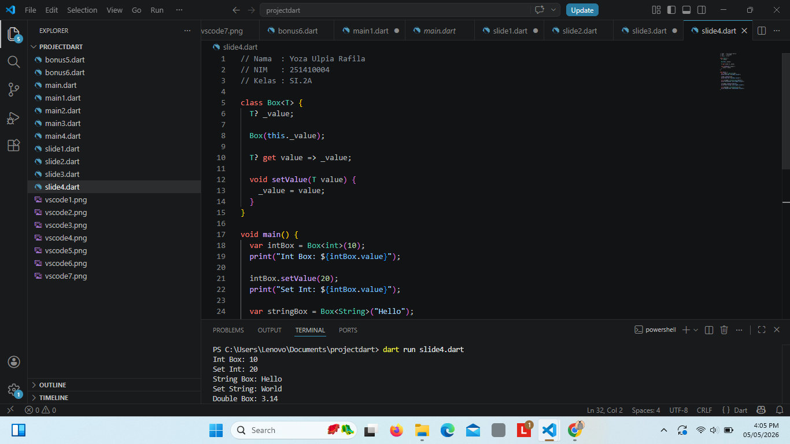
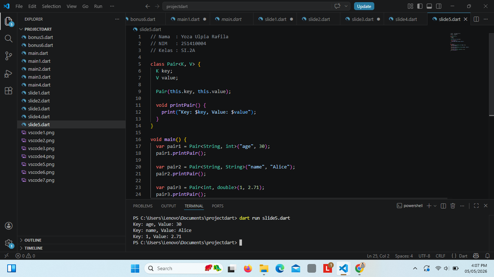
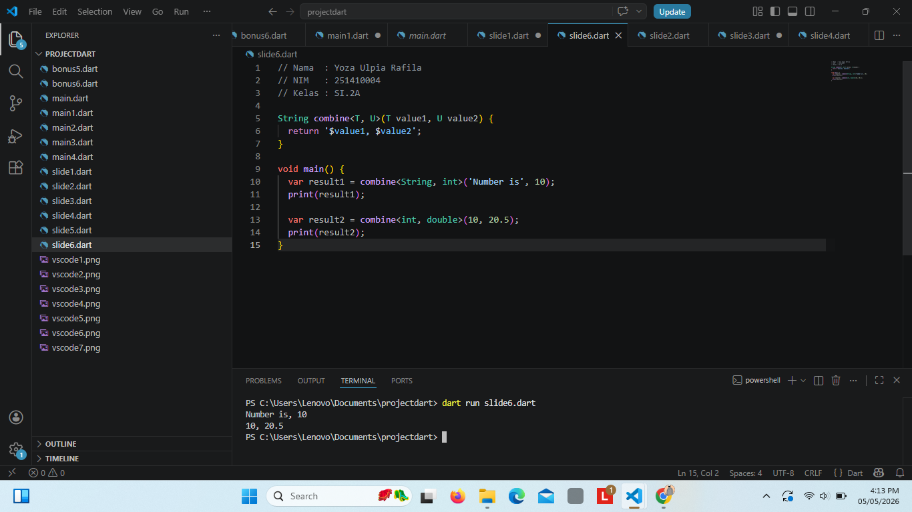
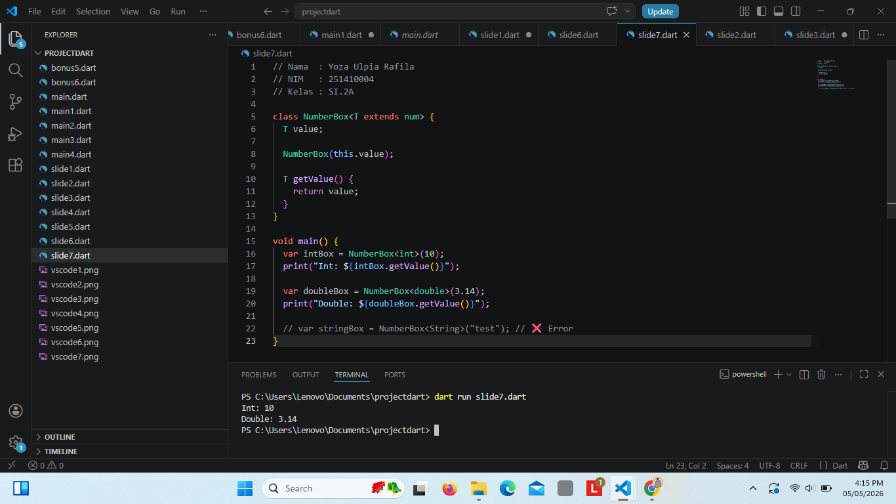
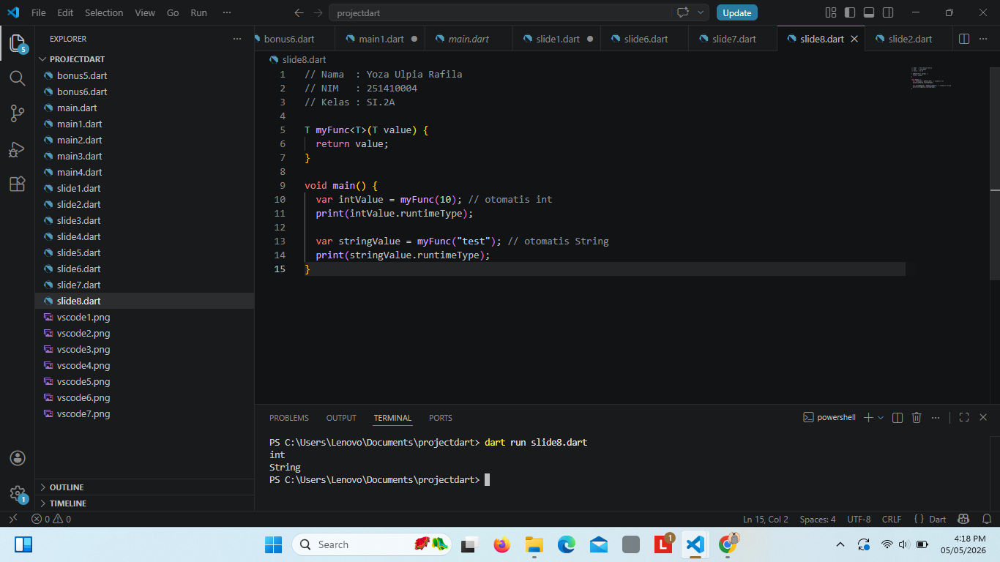
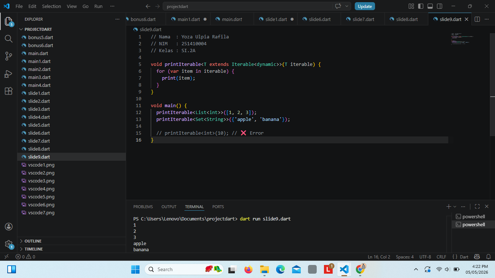
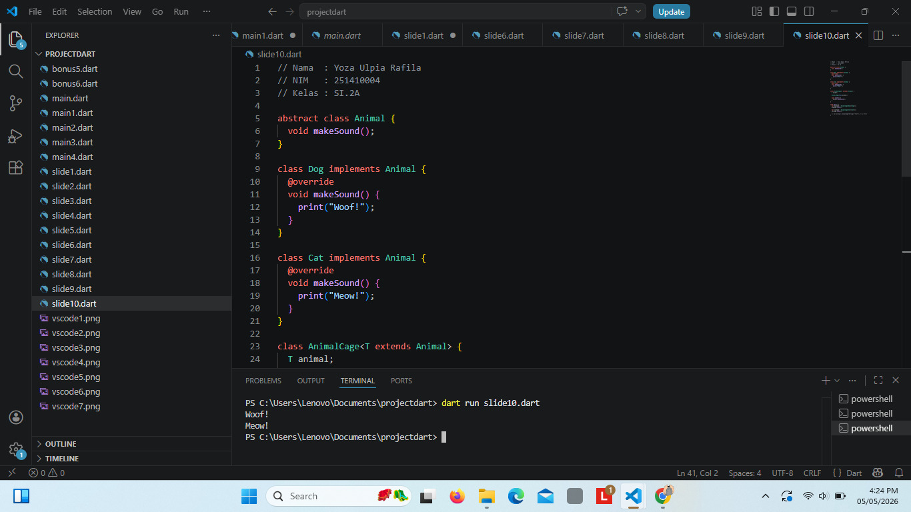

Yoza Ulpia Rafila
251410004
SI2A
// Nama : Yoza Ulpia Rafila
// NIM : 251410004
// Kelas : SI.2A
// =====================
// TANPA GENERIC
// =====================
class Box {
dynamic data;
Box(this.data);
}
void main() {
// Menyimpan data awal
var box = Box(42);
// Menampilkan data awal
int value = box.data;
print("Nilai awal: $value");
// Mengubah data
box.data = "Hello";
// Menampilkan data setelah diubah
print("Data setelah diubah: ${box.data}");
}

// Nama : Yoza Ulpia Rafila
// NIM : 251410004
// Kelas : SI.2A
// =====================
// DENGAN GENERIC
// =====================
class Box {
T data;
Box(this.data);
}
void main() {
// Data awal
var intBox = Box(42);
var stringBox = Box("Hello");
// Menampilkan data
print("Nilai int: ${intBox.data}");
print("Nilai string: ${stringBox.data}");
// Contoh keamanan (tidak bisa diubah tipe)
// intBox.data = "Hello"; // ❌ ERROR
}

// Nama : Yoza Ulpia Rafila
// NIM : 251410004
// Kelas : SI.2A
class MyClass {
T data;
MyClass(this.data);
T getData() {
return data;
}
}
// Generic function
T myFunc(T value) {
return value;
}
void main() {
var myInt = MyClass(10);
var myString = MyClass("test");
print(myInt.getData());
print(myString.getData());
var intValue = myFunc(100);
var stringValue = myFunc("hello");
print(intValue);
print(stringValue);
}

// Nama : Yoza Ulpia Rafila
// NIM : 251410004
// Kelas : SI.2A
class Box {
T? _value;
Box(this._value);
T? get value => _value;
void setValue(T value) {
_value = value;
}
}
void main() {
var intBox = Box(10);
print("Int Box: ${intBox.value}");
intBox.setValue(20);
print("Set Int: ${intBox.value}");
var stringBox = Box("Hello");
print("String Box: ${stringBox.value}");
stringBox.setValue("World");
print("Set String: ${stringBox.value}");
var doubleBox = Box(3.14);
print("Double Box: ${doubleBox.value}");
}

// Nama : Yoza Ulpia Rafila
// NIM : 251410004
// Kelas : SI.2A
class Pair {
K key;
V value;
Pair(this.key, this.value);
void printPair() {
print("Key: $key, Value: $value");
}
}
void main() {
var pair1 = Pair("age", 30);
pair1.printPair();
var pair2 = Pair("name", "Alice");
pair2.printPair();
var pair3 = Pair(1, 2.71);
pair3.printPair();
}

// Nama : Yoza Ulpia Rafila
// NIM : 251410004
// Kelas : SI.2A
String combine(T value1, U value2) {
return '$value1, $value2';
}
void main() {
var result1 = combine('Number is', 10);
print(result1);
var result2 = combine(10, 20.5);
print(result2);
}

// Nama : Yoza Ulpia Rafila
// NIM : 251410004
// Kelas : SI.2A
class NumberBox {
T value;
NumberBox(this.value);
T getValue() {
return value;
}
}
void main() {
var intBox = NumberBox(10);
print("Int: ${intBox.getValue()}");
var doubleBox = NumberBox(3.14);
print("Double: ${doubleBox.getValue()}");
// var stringBox = NumberBox("test"); // ❌ Error
}

// Nama : Yoza Ulpia Rafila
// NIM : 251410004
// Kelas : SI.2A
T myFunc(T value) {
return value;
}
void main() {
var intValue = myFunc(10); // otomatis int
print(intValue.runtimeType);
var stringValue = myFunc("test"); // otomatis String
print(stringValue.runtimeType);
}

// Nama : Yoza Ulpia Rafila
// NIM : 251410004
// Kelas : SI.2A
void printIterable>(T iterable) {
for (var item in iterable) {
print(item);
}
}
void main() {
printIterable>([1, 2, 3]);
printIterable>({'apple', 'banana'});
// printIterable(10); // ❌ Error
}

// Nama : Yoza Ulpia Rafila
// NIM : 251410004
// Kelas : SI.2A
abstract class Animal {
void makeSound();
}
class Dog implements Animal {
@override
void makeSound() {
print("Woof!");
}
}
class Cat implements Animal {
@override
void makeSound() {
print("Meow!");
}
}
class AnimalCage {
T animal;
AnimalCage(this.animal);
void sound() {
animal.makeSound();
}
}
void main() {
var dogCage = AnimalCage(Dog());
dogCage.sound();
var catCage = AnimalCage(Cat());
catCage.sound();
// var wrong = AnimalCage("test"); // ❌ Error
}
